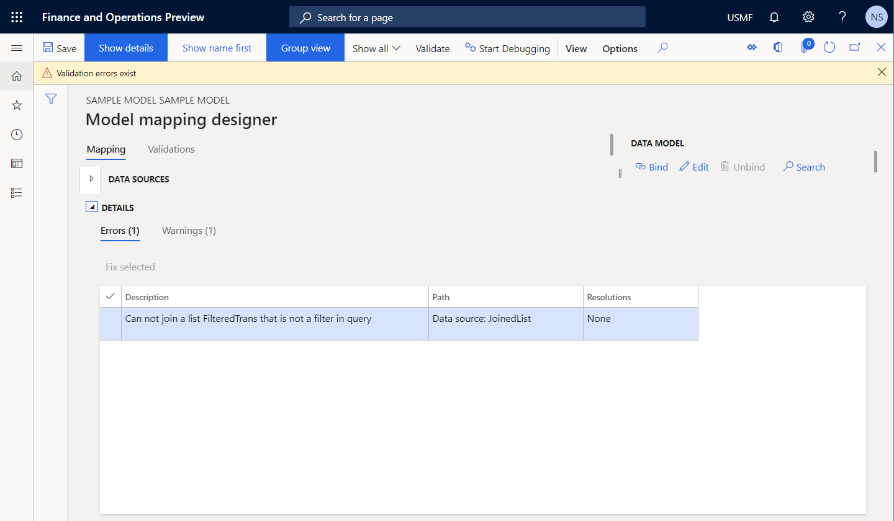
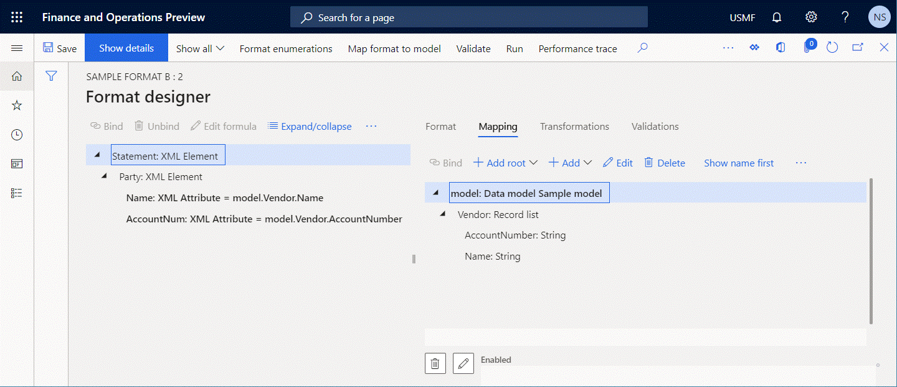

Konfigurierte EB-Komponente überprüfen, um Laufzeitprobleme zu vermeiden
[!include[banner](../includes/banner.md)]Alle konfigurierten Formate und Modellzuordnungskomponenten der elektronischen Berichterstellung (EB) können zur Entwurfszeit bestätigt werden. Während dieser Prüfung wird eine Konsistenzprüfung durchgeführt, um mögliche Laufzeitprobleme, wie etwa Ausführungsfehler und Leistungseinbußen, zu vermeiden. Für jedes gefundene Problem wird der Pfad eines problematischen Elements angegeben. Für einige Probleme ist eine automatische Korrektur verfügbar.
Standardmäßig wird die Prüfung in den folgenden Fällen automatisch für eine EB-Konfiguration angewendet, die die zuvor genannten EB-Komponenten enthält:
- Sie importieren eine neue Version einer EB-Konfiguration in Ihre Instanz von Microsoft Dynamics 365 Finance.
- Sie ändern den Status der bearbeitbaren EB-Konfiguration von Entwurf zu Abgeschlossen.
- Sie können eine bearbeitbare EB-Konfiguration zurücksetzen, indem Sie eine neue Basisversion anwenden.
Sie können diese Prüfung explizit ausführen. Wählen Sie eine der folgenden drei Optionen aus und befolgen Sie die angegebenen Schritte:
Option 1:
- Wechseln Sie zu Organisationsverwaltung > Elektronische Berichterstellung > Konfigurationen.
- Wählen Sie im Konfigurationsbaum im linken Bereich die gewünschte EB-Konfiguration aus, die das EB-Format oder die EB-Modellzuordnungskomponente enthält.
- Wählen Sie im Inforegister Versionen die gewünschte Version der ausgewählten EB-Konfiguration aus.
- Wählen Sie im Aktivitätsbereich Überprüfen aus.
Option 2 für ein EB-Format:
- Wechseln Sie zu Organisationsverwaltung > Elektronische Berichterstellung > Konfigurationen.
- Wählen Sie im Konfigurationsbaum im linken Bereich die gewünschte EB-Konfiguration aus, die das EB-Format enthält.
- Wählen Sie im Inforegister Versionen die gewünschte Version der ausgewählten EB-Konfiguration aus.
- Wählen Sie im Aktivitätsbereich Designer aus.
- Wählen Sie auf der Seite Formatdesigner im Aktivitätsbereich die Option Überprüfen aus.
Option 3 für eine EB-Modellzuordnung:
- Wechseln Sie zu Organisationsverwaltung > Elektronische Berichterstellung > Konfigurationen.
- Wählen Sie im Konfigurationsbaum im linken Bereich die gewünschte EB-Konfiguration aus, die die EB-Modellzuordnungskomponente enthält.
- Wählen Sie im Inforegister Versionen die gewünschte Version der ausgewählten EB-Konfiguration aus.
- Wählen Sie im Aktivitätsbereich Designer aus.
- Wählen Sie auf der Seite Modell für Datenquellenzuordnung im Aktionsbereich Designer aus.
- Wählen Sie auf der Seite Modellzuordnungsdesigner im Aktionsbereich die Option Überprüfen aus.
Führen Sie die folgenden Schritte aus, um die Prüfung beim Importieren der Konfiguration zu überspringen.
- Wechseln Sie zu Organisationsverwaltung > Elektronische Berichterstellung > Konfigurationen.
- Auf der Seite Konfigurationen im Aktivitätsbereich, auf der Registerkarte Konfigurationen in der Gruppe Erweiterte Einstellungen wählen Sie Benutzerparameter aus.
- Legen Sie die Option Konfiguration nach dem Import überprüfen auf Nein fest.
Führen Sie die folgenden Schritte aus, um die Überprüfung zu überspringen, wenn der Status der Version geändert oder zurückgesetzt wird.
- Wechseln Sie zu Organisationsverwaltung > Elektronische Berichterstellung > Konfigurationen.
- Auf der Seite Konfigurationen im Aktivitätsbereich, auf der Registerkarte Konfigurationen in der Gruppe Erweiterte Einstellungen wählen Sie Benutzerparameter aus.
- Legen Sie die Option Prüfung bei geändertem oder zurückgesetztem Konfigurationsstatus überspringen auf Ja fest.
Die EB verwendet die folgenden Kategorien, um Konsistenzprüfungen zu gruppieren:
- Ausführbarkeit – Inspektionen, die kritische Probleme erkennen, die zur Laufzeit auftreten können. Bei diesen Problemen handelt es sich meistens um Fehler.
- Leistung – Inspektionen, die Probleme erkennen, die zu einer ineffizienten Ausführung konfigurierter EB-Komponenten führen können. Bei diesen Problemen handelt es sich meistens um Warnungen.
- Datenintegrität – Inspektionen, bei denen Probleme festgestellt werden, die zu Datenverlust oder Laufzeitproblemen führen können. Bei diesen Problemen handelt es sich meistens um Warnungen.
Liste der Inspektionen
Die folgende Tabelle enthält eine Übersicht der Inspektionen, die die EB bietet. Weitere Informationen zu diesen Inspektionen erhalten Sie über die Links in der ersten Spalte, um zu den entsprechenden Abschnitten dieses Themas zu gelangen. In diesen Abschnitten werden die Komponententypen erläutert, für die die EB Inspektionen bereitstellt, sowie die Neukonfiguration von EB-Komponenten, um Probleme zu vermeiden.
| Name | Kategorie | Stufe | Meldung |
|---|---|---|---|
| Typenumrechnung | Ausführbarkeit | Fehler |
Ausdruck vom Typ <Typ> kann nicht zu Feld vom Typ <Typ> konvertiert werden. Laufzeitfehler: Ausnahme vom Typ |
| Typkompatibilität | Ausführbarkeit | Fehler |
Der konfigurierte Ausdruck kann nicht als Bindung des aktuellen Formatelements an eine Datenquelle verwendet werden, da dieser Ausdruck einen Wert vom Datentyp <Typ> zurückgibt. Dieser Datentyp liegt außerhalb des Bereichs der Datentypen, die vom aktuellen Formatelement vom Typ <Typ> unterstützt werden. Laufzeitfehler: Ausnahme vom Typ |
| Fehlendes Konfigurationselement | Ausführbarkeit | Fehler |
Pfad <Pfad > nicht gefunden. Laufzeitfehler: Element der Konfiguration <Pfad> nicht gefunden |
| Ausführbarkeit eines Ausdrucks mit FILTER-Funktion | Ausführbarkeit | Fehler |
Der Listenausdruck der FILTER-Funktion ist nicht abfragbar. Laufzeitfehler: Filterung wird nicht unterstützt. Überprüfen Sie die Konfiguration für weitere Details hierzu. |
| Ausführbarkeit einer GROUPBY-Datenquelle | Ausführbarkeit | Fehler | Pfad <Pfad> unterstützt keine Abfragen. |
| Ausführbarkeit | Fehler |
Gruppierung nach Funktion kann mit Abfrage nicht ausgeführt werden. Laufzeitfehler: Gruppierung nach Funktion kann mit Abfrage nicht ausgeführt werden. |
|
| Ausführbarkeit einer JOIN-Datenquelle | Ausführbarkeit | Fehler |
Kann keiner Liste <Pfad> beitreten, die kein Filter in der Abfrage ist. Laufzeitfehler: Die Funktion „Verknüpfte Datenquelle“ sollte ein Filterausdruck sein. Das berechnete Feld wurde falsch aufgerufen. |
| Bevorzugung der FILTER- gegenüber der WHERE-Funktion | Leistung | Achtung | Die FILTER-Funktion für den Ausdruck ist aus Sicht der Leistung der WHERE-Funktion vorzuziehen. Wählen Sie „Beheben“ aus, um sie automatisch zu ersetzen. |
| Bevorzugung der ALLITEMSQUERY- gegenüber der ALLITEMS-Funktion | Leistung | Achtung | Die ALLITEMSQUERY-Funktion für den Ausdruck ist aus Sicht der Leistung der ALLITEMS-Funktion vorzuziehen. Wählen Sie „Beheben“ aus, um sie automatisch zu ersetzen. |
| Berücksichtigung leerer Listenfälle | Ausführbarkeit | Achtung |
Die Liste <Pfad> wird nicht auf leere Listenfälle überprüft. Dies kann zur Laufzeit zu einem Fehler führen. Fügen Sie eine Überprüfung für einen leeren Listenfall hinzu. Laufzeitfehler: Liste ist leer bei <Pfad> Mögliches Problem: Die Position wird einmal ausgefüllt, während eine Datenquelle, aus der sie ausgefüllt wird, mehrere Datensätze enthält. |
| Ausführbarkeit eines Ausdrucks mit FILTER-Funktion (Zwischenspeicherung) | Ausführbarkeit | Fehler |
Die FILTER-Funktion kann nicht auf den ausgewählten Datenquellentyp angewendet werden. Eine Datenquelle vom Typ „Tabellendatensätze“ ist nur anwendbar, wenn sie nicht zwischengespeichert ist und keine manuell hinzugefügten verschachtelten Datenquellen enthält. Laufzeitfehler: Filterung wird nicht unterstützt. Überprüfen Sie die Konfiguration für weitere Details hierzu. |
| Fehlende Bindung | Ausführbarkeit | Achtung |
Der Pfad <Pfad> hat keine Bindung an eine Datenquelle bei der Verwendung der Modellzuordnung. Laufzeitfehler: Pfad <Pfad> ist nicht gebunden |
| Nicht verknüpfte Vorlage | Datenintegrität | Achtung | Die Datei <Name> ist mit keinen Dateikomponenten verknüpft und wird nach Änderung des Status der Konfigurationsversion entfernt. |
| Nicht synchronisiertes Format | Datenintegrität | Achtung | Der definierte Name <Komponentenname> existiert nicht in der Excel-Tabelle <Tabellenname>. |
Typenumrechnung
Die EB überprüft, ob der Datentyp eines Datenmodellfelds mit dem Datentyp eines Ausdrucks kompatibel ist, der als Bindung dieses Felds konfiguriert ist. Wenn die Datentypen nicht kompatibel sind, tritt im EB-Modellzuordnungsdesigner ein Prüfungsfehler auf. Die Nachricht, die Sie erhalten, besagt, dass die EB einen Ausdruck vom Typ A nicht in ein Feld vom Typ B konvertieren kann.
Die folgenden Schritte zeigen, wie dieses Problem auftreten kann.
Beginnen Sie gleichzeitig mit der Konfiguration des EB-Datenmodells und der EB-Modellzuordnungskomponenten.
Fügen Sie im Datenmodellbaum ein Feld mit dem Namen X hinzu und wählen Sie Integer als Datentyp aus.

Im Bereich „Datenquellen“ der Modellzuweisung fügen Sie eine Datenquelle vom Typ Berechnetes Feld hinzu.
Nennen Sie die neue Datenquelle Y und konfigurieren Sie sie so, dass sie den Ausdruck
INTVALUE(100)enthält.Binden Sie X an Y.
Ändern Sie im Datenmodelldesigner den Datentyp des Felds X von Integer zu Int64.
Wählen Sie Überprüfen aus, um die bearbeitbare Modellzuordnungskomponente auf der Seite Modellzuordnungsdesigner zu überprüfen.
Wählen Sie Überprüfen aus, um die Modellzuordnungskomponente der ausgewählten EB-Konfiguration auf der Seite Konfigurationen zu überprüfen.

Beachten Sie, dass ein Prüfungsfehler auftritt. Die Nachricht gibt an, dass der Wert vom Typ Integer, der vom Ausdruck
INTVALUE(100)der Datenquelle Y zurückgegeben wird, nicht im Datenmodellfeld X vom Typ Int64 gespeichert werden kann.
Die folgende Abbildung zeigt den Laufzeitfehler, der auftritt, wenn Sie die Warnung ignorieren und Ausführen auswählen, um ein Format auszuführen, das für die Verwendung der Modellzuordnung konfiguriert ist.

Automatische Lösung
Es ist keine Option verfügbar, um dieses Problem automatisch zu beheben.
Manuelle Lösung
Option 1
Aktualisieren Sie die Datenmodellstruktur, indem Sie den Datentyp des Datenmodellfelds so ändern, dass er mit dem Datentyp des Ausdrucks übereinstimmt, der für die Bindung dieses Felds konfiguriert ist. Für das vorstehende Beispiel muss der Datentyp des Felds X wieder zu Integer geändert werden.
Option 2
Aktualisieren Sie die Modellzuordnung, indem Sie den Ausdruck der Datenquelle ändern, die an das Datenmodellfeld gebunden ist. Für das vorstehende Beispiel muss der Ausdruck der Datenquelle Y zu INT64VALUE(100) geändert werden.
Typkompatibilität
Die EB überprüft, ob der Datentyp eines Formatelements mit dem Datentyp eines Ausdrucks kompatibel ist, der als Bindung dieses Formatelements konfiguriert ist. Wenn die Datentypen nicht kompatibel sind, tritt im EB-Arbeitsgangsdesigner ein Prüfungsfehler auf. Die Nachricht, die Sie erhalten, besagt, dass der konfigurierte Ausdruck kann nicht als Bindung des aktuellen Formatelements an eine Datenquelle verwendet werden, da dieser Ausdruck einen Wert vom Datentyp A zurückgibt. Dieser Datentyp liegt außerhalb des Bereichs der Datentypen, die vom aktuellen Formatelement vom Typ B unterstützt werden.
Die folgenden Schritte zeigen, wie dieses Problem auftreten kann.
Beginnen Sie gleichzeitig mit der Konfiguration der EB-Datenmodells und der EB-Formatkomponenten.
Fügen Sie im Datenmodellbaum ein Feld mit dem Namen X hinzu und wählen Sie Integer als Datentyp aus.
Fügen Sie im Formatstrukturbaum ein Formatelement vom Typ Numerisch hinzu.
Nennen Sie das neue Formatelement Y. Wählen Sie im Feld Numerischer Typ die Option Integer als Datentyp aus.
Binden Sie X an Y.
Ändern Sie im Formatstrukturbaum den Datentyp des Formatelements Y von Integer zu Int64.
Wählen Sie Überprüfen aus, um die bearbeitbare Formatkomponente auf der Seite Formatdesigner zu überprüfen.
Beachten Sie, dass ein Prüfungsfehler auftritt. Die Nachricht besagt, dass der konfigurierte Ausdruck nur Werte vom Typ Int64 akzeptieren kann. Daher kann der Wert des Datenmodellfelds X vom Typ Integer nicht in das Formatelement Y eingegeben werden.
Automatische Lösung
Es ist keine Option verfügbar, um dieses Problem automatisch zu beheben.
Manuelle Lösung
Option 1
Aktualisieren Sie die Formatstruktur, indem Sie den Datentyp des Formatelements Numerisch so ändern, dass er mit dem Datentyp des Ausdrucks übereinstimmt, der für die Bindung dieses Elements konfiguriert ist. Im vorstehenden Beispiel muss der Wert Numerischer Typ des Formatelements X wieder zu Integer geändert werden.
Option 2
Aktualisieren Sie die Formatzuordnung des Formatelements X, indem Sie den Ausdruck von model.X zu INT64VALUE(model.X) ändern.
Fehlendes Konfigurationselement
Die EB prüft, ob die Bindungsausdrücke nur Datenquellen enthalten, die in der bearbeitbaren EB-Komponente konfiguriert sind. Für jede Bindung, die eine Datenquelle enthält, die in der bearbeitbaren EB-Komponente fehlt, tritt im EB-Vorgangsdesigner oder im EB-Modellzuordnungsdesigner ein Prüfungsfehler auf.
Die folgenden Schritte zeigen, wie dieses Problem auftreten kann.
Beginnen Sie gleichzeitig mit der Konfiguration des EB-Datenmodells und der EB-Modellzuordnungskomponenten.
Fügen Sie im Datenmodellbaum ein Feld mit dem Namen X hinzu und wählen Sie Integer als Datentyp aus.
Im Bereich „Datenquellen“ der Modellzuweisung fügen Sie eine Datenquelle vom Typ Berechnetes Feld hinzu.
Nennen Sie die neue Datenquelle Y und konfigurieren Sie sie so, dass sie den Ausdruck
INTVALUE(100)enthält.Binden Sie X an Y.
Löschen Sie im Modellzuordnungsdesigner im Bereich „Datenquellen“ die Datenquelle Y.
Wählen Sie Überprüfen aus, um die bearbeitbare Modellzuordnungskomponente auf der Seite Modellzuordnungsdesigner zu überprüfen.

Beachten Sie, dass ein Prüfungsfehler auftritt. Die Nachricht besagt, dass die Bindung des Datenmodellfelds X den Pfad enthält, der auf die Datenquelle Y verweist, diese Datenquelle jedoch nicht gefunden wurde.
Automatische Lösung
Wählen Sie Bindung aufheben aus, um dieses Problem automatisch zu beheben, indem die fehlende Datenquellenbindung entfernt wird.
Manuelle Lösung
Option 1
Heben Sie die Bindung für das Datenmodellfeld X auf, damit es nicht mehr auf das nicht vorhandene Datenquelle Y verweist.
Option 2
Fügen Sie im Bereich „Datenquellen“ des EB-Modellzuordnungsdesigners die Datenquelle Y erneut hinzu.
Ausführbarkeit eines Ausdrucks mit FILTER-Funktion
Die in die EB integrierte FILTER-Funktion wird verwendet, um auf Anwendungstabellen, Ansichten oder Datenentitäten zuzugreifen, indem ein einzelner SQL-Aufruf getätigt wird, um die erforderlichen Daten als Liste von Datensätzen abzurufen. Eine Datenquelle vom Typ Datensatzliste wird als Argument dieser Funktion verwendet und gibt die Anwendungsquelle für den Aufruf an. Die EB prüft, ob eine direkte SQL-Abfrage an eine Datenquelle gerichtet werden kann, auf die in der FILTER-Funktion verwiesen wird. Wenn keine direkte Abfrage möglich ist, tritt im EB-Modellzuordnungsdesigner ein Prüfungsfehler auf. Die Nachricht, die Sie erhalten, besagt, dass der EB-Ausdruck, der die FILTER-Funktion enthält, nicht zur Laufzeit ausgeführt werden kann.
Die folgenden Schritte zeigen, wie dieses Problem auftreten kann.
Beginnen Sie mit der Konfiguration der EB-Modellzuordnungskomponente.
Fügen Sie eine Datenquelle vom Typ Dynamics 365 for Operations \ Tabellendatensätze hinzu.
Nennen Sie die neue Datenquelle Lieferant. Wählen Sie im Feld Tabelle die Option VendTable aus, um anzugeben, dass diese Datenquelle die VendTable-Tabelle anfordert.
Fügen Sie eine Datenquelle vom Typ Berechnetes Feld hinzu.
Nennen Sie die neue Datenquelle FilteredVendor und konfigurieren Sie sie so, dass sie den Ausdruck
FILTER(Vendor, Vendor.AccountNum="US-101")enthält.Wählen Sie Überprüfen aus, um die bearbeitbare Modellzuordnungskomponente auf der Seite Modellzuordnungsdesigner zu überprüfen. Vergewissern Sie sich dann, ob der Ausdruck
FILTER(Vendor, Vendor.AccountNum="US-101")in der Datenquelle Liefernant abgefragt werden kann.Ändern Sie die Datenquelle Lieferant, indem sie ein verschachteltes Feld vom Typ Berechnetes Feld hinzufügen, um die gekürzte Lieferantenkontonummer abzurufen.
Nennen Sie die das verschachtelte Feld $AccNumber und konfigurieren Sie es so, dass es den Ausdruck
TRIM(Vendor.AccountNum)enthält.Wählen Sie Überprüfen aus, um die bearbeitbare Modellzuordnungskomponente auf der Seite Modellzuordnungsdesigner zu überprüfen. Vergewissern Sie sich dann, ob der Ausdruck
FILTER(Vendor, Vendor.AccountNum="US-101")in der Datenquelle Liefernant abgefragt werden kann.
Beachten Sie, dass ein Prüfungsfehler auftritt, da die Datenquelle Lieferant ein verschachteltes Feld vom Typ Berechnetes Feld enthält, das nicht zulässt, dass der Ausdruck aus der Datenquelle FilteredVendor in die direkte SQL-Anweisung übersetzt wird.
Die folgende Abbildung zeigt den Laufzeitfehler, der auftritt, wenn Sie die Warnung ignorieren und Ausführen auswählen, um ein Format auszuführen, das für die Verwendung der Modellzuordnung konfiguriert ist.

Automatische Lösung
Es ist keine Option verfügbar, um dieses Problem automatisch zu beheben.
Manuelle Lösung
Option 1
Anstatt ein verschachteltes Feld vom Typ Berechnetes Feld zur Datenquelle Lieferant hinzuzufügen, fügen Sie das verschachtelte Feld $AccNumber zur Datenquelle FilteredVendor hinzu und konfigurieren es so, dass es den Ausdruck TRIM(FilteredVendor.AccountNum) enthält. Auf diese Weise kann der Ausdruck FILTER(Vendor, Vendor.AccountNum="US-101") auf SQL-Ebene ausgeführt werden und das verschachtelte Feld $AccNumber danach berechnen.
Option 2
Ändern Sie den Ausdruck der Datenquelle FilteredVendor von FILTER(Vendor, Vendor.AccountNum="US-101") zu WHERE(Vendor, Vendor.AccountNum="US-101"). Es wird nicht empfohlen, den Ausdruck für eine Tabelle mit einem großen Datenvolumen (Transaktionstabelle) zu ändern, da alle Datensätze abgerufen werden und die Auswahl der erforderlichen Datensätze im Speicher erfolgt. Daher kann dieser Ansatz eine Verschlechterung der Leistung verursachen. Weitere Informationen finden Sie unter WHERE EB-Funktion.
Ausführbarkeit einer GROUPBY-Datenquelle
Die GROUPBY-Datenquelle unterteilt das Abfrageergebnis in Gruppen von Datensätzen, normalerweise zum Zweck einer oder mehrerer Aggregationen für jede Gruppe. Jede GROUPBY-Datenquelle kann so konfiguriert werden, dass sie entweder auf Datenbankebene oder im Speicher ausgeführt wird. Wenn eine GROUPBY-Datenquelle so konfiguriert ist, dass sie auf Datenbankebene ausgeführt wird, prüft die EB, ob eine direkte SQL-Abfrage für eine Datenquelle eingerichtet werden kann, auf die in dieser Datenquelle verwiesen wird. Wenn keine direkte Abfrage möglich ist, tritt im EB-Modellzuordnungsdesigner ein Prüfungsfehler auf. Die Nachricht, die Sie erhalten, besagt, dass die konfigurierte GROUPBY-Datenquelle nicht zur Laufzeit ausgeführt werden kann.
Die folgenden Schritte zeigen, wie dieses Problem auftreten kann.
Beginnen Sie mit der Konfiguration der EB-Modellzuordnungskomponente.
Fügen Sie eine Datenquelle vom Typ Dynamics 365 for Operations \ Tabellendatensätze hinzu.
Nennen Sie die neue Datenquelle Trans. Wählen Sie im Feld Tabelle die Option VendTrans aus, um anzugeben, dass diese Datenquelle die VendTrans-Tabelle anfordert.
Fügen Sie eine Datenquelle vom Typ Gruppieren nach hinzu.
Nennen Sie die neue Datenquelle GroupedTrans und konfigurieren Sie sie folgendermaßen:
- Wählen Sie die Datenquelle Trans als Quelle für Datensätze aus, die gruppiert werden sollen.
- Wählen Sie im Feld Ausführungsort die Option Abfrage aus, um anzugeben, dass Sie diese Datenquelle auf Datenbankebene ausführen möchten.

Wählen Sie Überprüfen aus, um die bearbeitbare Modellzuordnungskomponente auf der Seite Modellzuordnungsdesigner zu überprüfen. Vergewissern Sie sich dann, ob die konfigurierte Datenquelle GroupedTrans abgefragt werden kann.
Ändern Sie die Datenquelle Trans, indem sie ein verschachteltes Feld vom Typ Berechnetes Feld hinzufügen, um die gekürzte Lieferantenkontonummer abzurufen.
Nennen Sie die neue Datenquelle $AccNumber und konfigurieren Sie sie so, dass sie den Ausdruck
TRIM(Trans.AccountNum)enthält.
Wählen Sie Überprüfen aus, um die bearbeitbare Modellzuordnungskomponente auf der Seite Modellzuordnungsdesigner zu überprüfen. Vergewissern Sie sich dann, ob die konfigurierte Datenquelle GroupedTrans abgefragt werden kann.
Beachten Sie, dass ein Prüfungsfehler auftritt, da die Datenquelle Trans ein verschachteltes Feld vom Typ Berechnetes Feld enthält, das nicht zulässt, dass die Datenquelle GroupedTrans in die direkte SQL-Anweisung übersetzt wird.
Die folgende Abbildung zeigt den Laufzeitfehler, der auftritt, wenn Sie die Warnung ignorieren und Ausführen auswählen, um ein Format auszuführen, das für die Verwendung der Modellzuordnung konfiguriert ist.

Automatische Lösung
Es ist keine Option verfügbar, um dieses Problem automatisch zu beheben.
Manuelle Lösung
Option 1
Anstatt ein verschachteltes Feld vom Typ Berechnetes Feld zur Datenquelle Trans hinzuzufügen, fügen Sie das verschachtelte Feld $AccNumber für das Element GroupedTrans.lines zur Datenquelle GroupedTrans hinzu und konfigurieren es so, dass es den Ausdruck TRIM(GroupedTrans.lines.AccountNum) enthält. Auf diese Weise kann die Datenquelle GroupedTrans auf SQL-Ebene ausgeführt werden und das verschachtelte Feld $AccNumber danach berechnen.
Option 2
Ändern Sie den Wert des Felds Ausführungsort für die Datenquelle GroupedTrans von Abfrage zu Im Speicher. Es wird nicht empfohlen, den Wert für eine Tabelle mit einem großen Datenvolumen (Transaktionstabelle) zu ändern, da alle Datensätze abgerufen werden und die Gruppierung und Aggregation im Speicher erfolgen. Daher kann dieser Ansatz eine Verschlechterung der Leistung verursachen.
Ausführbarkeit einer JOIN-Datenquelle
Die JOIN-Datenquelle kombiniert Datensätze aus zwei oder mehr Datenbanktabellen basierend auf verwandten Feldern. Jede JOIN-Datenquelle kann so konfiguriert werden, dass sie entweder auf Datenbankebene oder im Speicher ausgeführt wird. Wenn eine JOIN-Datenquelle so konfiguriert ist, dass sie auf Datenbankebene ausgeführt wird, prüft die EB, ob eine direkte SQL-Abfrage für Datenquellen eingerichtet werden kann, auf die in dieser Datenquelle verwiesen wird. Wenn keine direkte SQL-Abfrage mit mindestens einer der referenzierten Datenquellen möglich ist, tritt im EB-Modellzuordnungsdesigner ein Prüfungsfehler auf. Die Nachricht, die Sie erhalten, besagt, dass die konfigurierte JOIN-Datenquelle nicht zur Laufzeit ausgeführt werden kann.
Die folgenden Schritte zeigen, wie dieses Problem auftreten kann.
Beginnen Sie mit der Konfiguration der EB-Modellzuordnungskomponente.
Fügen Sie eine Datenquelle vom Typ Dynamics 365 for Operations \ Tabellendatensätze hinzu.
Nennen Sie die neue Datenquelle Lieferant. Wählen Sie im Feld Tabelle die Option VendTable aus, um anzugeben, dass diese Datenquelle die VendTable-Tabelle anfordert.
Fügen Sie eine Datenquelle vom Typ Dynamics 365 for Operations \ Tabellendatensätze hinzu.
Nennen Sie die neue Datenquelle Trans. Wählen Sie im Feld Tabelle die Option VendTrans aus, um anzugeben, dass diese Datenquelle die VendTrans-Tabelle anfordert.
Fügen Sie eine Datenquelle vom Typ Berechnetes Feld als verschachteltes Feld der Datenquelle Lieferant hinzu.
Nennen Sie die neue Datenquelle FilteredTrans und konfigurieren Sie sie so, dass sie den Ausdruck
FILTER(Trans, Trans.AccountNum=Vendor.AccountNum)enthält.Fügen Sie eine Datenquelle vom Typ Join hinzu.
Nennen Sie die neue Datenquelle JoinedList und konfigurieren Sie sie folgendermaßen:
- Fügen Sie die Datenquelle Lieferant als den ersten Satz Datensätze hinzu, die verknüpft werden sollen.
- Fügen Sie die Datenquelle Vendor.FilteredTrans als den zweiten Satz Datensätze hinzu, die verknüpft werden sollen. Wählen Sie INNER als Typ aus.
- Wählen Sie im Feld Ausführen die Option Abfrage aus, um anzugeben, dass Sie diese Datenquelle auf Datenbankebene ausführen möchten.

Wählen Sie Überprüfen aus, um die bearbeitbare Modellzuordnungskomponente auf der Seite Modellzuordnungsdesigner zu überprüfen. Vergewissern Sie sich dann, ob die konfigurierte Datenquelle JoinedList abgefragt werden kann.
Ändern Sie den Ausdruck der Datenquelle Vendor.FilteredTrans von
FILTER(Trans, Trans.AccountNum=Vendor.AccountNum)zuWHERE(Trans, Trans.AccountNum=Vendor.AccountNum).Wählen Sie Überprüfen aus, um die bearbeitbare Modellzuordnungskomponente auf der Seite Modellzuordnungsdesigner zu überprüfen. Vergewissern Sie sich dann, ob die konfigurierte Datenquelle JoinedList abgefragt werden kann.

Beachten Sie, dass ein Prüfungsfehler auftritt, da der Ausdruck der Datenquelle Vendor.FilteredTrans nicht in den direkten SQL-Aufruf übersetzt werden kann. Darüber hinaus erlaubt der direkte SQL-Aufruf nicht den Aufruf der Datenquelle JoinedList, die in die direkte SQL-Anweisung übersetzt werden soll.

Die folgende Abbildung zeigt den Laufzeitfehler, der auftritt, wenn Sie die Warnung ignorieren und Ausführen auswählen, um ein Format auszuführen, das für die Verwendung der Modellzuordnung konfiguriert ist.

Automatische Lösung
Es ist keine Option verfügbar, um dieses Problem automatisch zu beheben.
Manuelle Lösung
Option 1
Ändern Sie den Ausdruck der Datenquelle Vendor.FilteredTrans von WHERE(Trans, Trans.AccountNum=Vendor.AccountNum) zurück zu FILTER(Trans, Trans.AccountNum=Vendor.AccountNum), wie es die Warnung vorschlug.

Option 2
Ändern Sie den Wert des Felds Ausführung für die Datenquelle JoinedList von Abfrage zu Im Speicher. Es wird nicht empfohlen, den Wert für eine Tabelle mit einem großen Datenvolumen (Transaktionstabelle) zu ändern, da alle Datensätze abgerufen werden und die Verknüpfung im Speicher erfolgt. Daher kann dieser Ansatz eine Verschlechterung der Leistung verursachen. Eine Prüfungswarnung informiert Sie über dieses Risiko.
Bevorzugung der FILTER- gegenüber der WHERE-Funktion
Die in die EB integrierte FILTER-Funktion wird verwendet, um auf Anwendungstabellen, Ansichten oder Datenentitäten zuzugreifen, indem ein einzelner SQL-Aufruf getätigt wird, um die erforderlichen Daten als Liste von Datensätzen abzurufen. Die WHERE-Funktion ruft alle Datensätze aus der angegebenen Quelle ab und führt die Datensatzauswahl im Speicher durch. Eine Datenquelle vom Typ Datensatzliste wird als Argument beider Funktionen verwendet und gibt eine Quelle für das Abrufen von Datensätzen an. Die EB prüft, ob ein direkter SQL-Aufruf an eine Datenquelle gerichtet werden kann, auf die in der WHERE-Funktion verwiesen wird. Wenn kein direkter Aufruf möglich ist, tritt im EB-Modellzuordnungsdesigner eine Prüfungswarnung auf. Die Nachricht, die Sie erhalten, empfiehlt, die FILTER-Funktion anstelle der WHERE-Funktion zur Verbesserung der Effizienz zu verwenden.
Die folgenden Schritte zeigen, wie dieses Problem auftreten kann.
Beginnen Sie mit der Konfiguration der EB-Modellzuordnungskomponente.
Fügen Sie eine Datenquelle vom Typ Dynamics 365 for Operations \ Tabellendatensätze hinzu.
Nennen Sie die neue Datenquelle Trans. Wählen Sie im Feld Tabelle die Option VendTrans aus, um anzugeben, dass diese Datenquelle die VendTrans-Tabelle anfordert.
Fügen Sie eine Datenquelle vom Typ Berechnetes Feld als verschachteltes Feld der Datenquelle Lieferant hinzu.
Nennen Sie die neue Datenquelle FilteredTrans und konfigurieren Sie sie so, dass sie den Ausdruck
WHERE(Trans, Trans.AccountNum="US-101")enthält.Fügen Sie eine Datenquelle vom Typ Dynamics 365 for Operations \ Tabellendatensätze hinzu.
Nennen Sie die neue Datenquelle Lieferant. Wählen Sie im Feld Tabelle die Option VendTable aus, um anzugeben, dass diese Datenquelle die VendTable-Tabelle anfordert.
Fügen Sie eine Datenquelle vom Typ Berechnetes Feld hinzu.
Nennen Sie die neue Datenquelle FilteredVendor und konfigurieren Sie sie so, dass sie den Ausdruck
WHERE(Vendor, Vendor.AccountNum="US-101")enthält.Wählen Sie Überprüfen aus, um die bearbeitbare Modellzuordnungskomponente auf der Seite Modellzuordnungsdesigner zu überprüfen.

Beachten Sie, dass Prüfungswarnungen die Verwendung der FILTER-Funktion anstelle der WHERE-Funktion für die Datenquellen FilteredVendor und FilteredTrans empfehlen.

Automatische Lösung
Wählen Sie Beheben aus, um die WHERE-Funktion automatisch durch die FILTER-Funktion zu ersetzen im Ausdruck aller Datenquellen, die im Raster auf der Registerkarte Warnungen für diese Art der Überprüfung angezeigt werden.
Alternativ können Sie die Zeile für eine einzelne Warnung im Raster auswählen und dann Ausgewählte beheben auswählen. In diesem Fall wird der Ausdruck automatisch nur in der Datenquelle geändert, die in der ausgewählten Warnung angegeben ist.

Manuelle Lösung
Sie können die Ausdrücke aller im Prüfungsraster genannten Datenquellen manuell anpassen, indem Sie die WHERE-Funktion durch die FILTER-Funktion ersetzen.
Bevorzugung der ALLITEMSQUERY- gegenüber der ALLITEMS-Funktion
Die integrierten EB-Funktionen ALLITEMS und ALLITEMSQUERY werden verwendet, um einen vereinfachten Wert von Datensatzliste zu erhalten, der aus einer Liste von Datensätzen besteht, die alle Elemente darstellen, die dem angegebenen Pfad entsprechen. Die EB prüft, ob ein direkter SQL-Aufruf an eine Datenquelle gerichtet werden kann, auf die in der ALLITEMS-Funktion verwiesen wird. Wenn kein direkter Aufruf möglich ist, tritt im EB-Modellzuordnungsdesigner eine Prüfungswarnung auf. Die Nachricht, die Sie erhalten, empfiehlt, die ALLITEMSQUERY-Funktion anstelle der ALLITEMS-Funktion zur Verbesserung der Effizienz zu verwenden.
Die folgenden Schritte zeigen, wie dieses Problem auftreten kann.
Beginnen Sie mit der Konfiguration der EB-Modellzuordnungskomponente.
Fügen Sie eine Datenquelle vom Typ Dynamics 365 for Operations \ Tabellendatensätze hinzu.
Nennen Sie die neue Datenquelle Lieferant. Wählen Sie im Feld Tabelle die Option VendTable aus, um anzugeben, dass diese Datenquelle die VendTable-Tabelle anfordert.
Fügen Sie eine Datenquelle vom Typ Berechnetes Feld hinzu, um Datensätze für mehrere Lieferanten zu erhalten.
Nennen Sie die neue Datenquelle FilteredVendor und konfigurieren Sie sie so, dass sie den Ausdruck
FILTER(Vendor, OR(Vendor.AccountNum="US-101",Vendor.AccountNum="US-102"))enthält.Fügen Sie eine Datenquelle vom Typ Berechnetes Feld hinzu, um Transaktionen aller gefilterten Lieferanten zu erhalten.
Nennen Sie die neue Datenquelle FilteredVendorTrans und konfigurieren Sie sie so, dass sie den Ausdruck
ALLITEMS(FilteredVendor.'<Relations'.'VendTrans.VendTable_AccountNum')enthält.Wählen Sie Überprüfen aus, um die bearbeitbare Modellzuordnungskomponente auf der Seite Modellzuordnungsdesigner zu überprüfen.
Beachten Sie, dass eine Prüfungswarnung auftritt. Die Nachricht empfiehlt, die ALLITEMSQUERY-Funktion anstelle der ALLITEMS-Funktion für die Datenquelle FilteredVendorTrans zu verwenden.

Automatische Lösung
Wählen Sie Beheben aus, um die ALLITEMS-Funktion automatisch durch die ALLITEMSQUERY-Funktion zu ersetzen im Ausdruck aller Datenquellen, die im Raster auf der Registerkarte Warnungen für diese Art der Überprüfung angezeigt werden.
Alternativ können Sie die Zeile für eine einzelne Warnung im Raster auswählen und dann Ausgewählte beheben auswählen. In diesem Fall wird der Ausdruck automatisch nur in der Datenquelle geändert, die in der ausgewählten Warnung angegeben ist.

Manuelle Lösung
Sie können die Ausdrücke aller im Prüfungsraster genannten Datenquellen manuell anpassen, indem Sie die ALLITEMS-Funktion durch die ALLITEMSQUERY-Funktion ersetzen.
Berücksichtigung leerer Listenfälle
Sie können Ihr EB-Format oder Ihre Modellzuordnungskomponente so konfigurieren, dass der Feldwert aus einer Datenquelle vom Typ Datensatzliste abgerufen wird. Die EB überprüft, ob Ihr Entwurf den Fall berücksichtigt, dass eine aufgerufene Datenquelle keine Datensätze enthält (d. h., dass sie leer ist), um Laufzeitfehler zu vermeiden, wenn ein Wert aus einem Feld eines nicht vorhandenen Datensatzes abgerufen wird.
Die folgenden Schritte zeigen, wie dieses Problem auftreten kann.
Beginnen Sie gleichzeitig mit der Konfiguration der EB-Datenmodell-, der EB-Modellzuordnungs- und der EB-Formatkomponenten.
Fügen Sie im Datenmodellbaum ein Stammelement mit dem Namen Root3 hinzu.
Ändern Sie das Element Root3, indem Sie ein verschachteltes Element vom Typ Datensatzliste hinzufügen.
Nennen Sie das neue verschachtelte Element Lieferant.
Ändern Sie das Element Lieferant auf folgende Weise:
- Fügen Sie ein verschachteltes Feld vom Typ Zeichenfolge hinzu und nennen Sie es Name.
- Fügen Sie ein verschachteltes Feld vom Typ Zeichenfolge hinzu und nennen Sie es AccountNumber.

Im Bereich „Datenquellen“ der Modellzuweisung fügen Sie eine Datenquelle vom Typ Dynamics 365 for Operations \ Tabellendatensätze hinzu.
Nennen Sie die neue Datenquelle Lieferant. Wählen Sie im Feld Tabelle die Option VendTable aus, um anzugeben, dass diese Datenquelle die VendTable-Tabelle anfordert.
Fügen Sie eine Datenquelle vom Typ Allgemein \ Benutzereingabeparameter hinzu, um im Dialogfeld zur Laufzeit nach einem Lieferantenkonto zu suchen.
Nennen Sie die neue Datenquelle RequestedAccountNum. Geben Sie in das Feld Beschriftung den Text Lieferantenkontonummer ein. Behalten Sie im Feld Name des Betriebsdatentyps den Standardwert Beschreibung bei.
Fügen Sie eine Datenquelle vom Typ Berechnetes Feld hinzu, um nach einem Lieferanten zu filtern, zu dem eine Abfrage durchgeführt wird.
Nennen Sie die neue Datenquelle FilteredVendor und konfigurieren Sie sie so, dass sie den Ausdruck
FILTER(Vendor, Vendor.AccountNum=RequestedAccountNum)enthält.Binden Sie die Datenmodellelemente wie folgt an konfigurierte Datenquellen:
- Binden Sie FilteredVendor an Lieferant.
- Binden Sie FilteredVendor.AccountNum an Vendor.AccountNumber.
- Binden Sie FilteredVendor.'name()' an Vendor.Name.

Fügen Sie im Formatstrukturbaum die folgenden Elemente hinzu, um ein ausgehendes Dokument im XML-Format zu generieren, das die Lieferantendetails enthält:
Fügen Sie das Root-XML-Element Anweisung hinzu.
Fügen Sie für das XML-Element Anweisung das verschachtelte XML-Element Partei hinzu.
Fügen Sie für das XML-Element Partei die folgenden verschachtelten XML-Attribute hinzu.
- Name
- AccountNum
Binden Sie Formatelemente auf die folgende Weise an bereitgestellte Datenquellen:
- Binden Sie das Formatelement Anweisung\Partei\Name an das Datenquellenfeld model.Vendor.Name.
- Binden Sie das Formatelement Anweisung\Partei\AccountNum an das Datenquellenfeld model.Vendor.AccountNumber.
Wählen Sie Überprüfen aus, um die bearbeitbare Formatkomponente auf der Seite Formatdesigner zu überprüfen.

Beachten Sie, dass ein Prüfungsfehler auftritt. Die Nachricht besagt, dass zur Laufzeit möglicherweise ein Fehler für die konfigurierten Formatkomponenten Anweisung\Partei\Name und Anweisung\Partei\AccountNum auftritt, wenn die Liste model.Vendor leer ist.

Die folgende Abbildung zeigt den Laufzeitfehler, der auftritt, wenn Sie die Warnung ignorieren, für das Format Ausführen auswählen und die Kontonummer eines nicht existierenden Lieferanten auswählen. Da der angeforderte Lieferant nicht existiert, wird die Liste model.Vendor leer sein (d. h., sie enthält keine Datensätze).

Automatische Lösung
Für die ausgewählte Zeile im Raster auf der Registerkarte Warnungen können Sie Bindung aufheben auswählen. Die Bindung, auf die in der Spalte Pfad verwiesen wird, wird automatisch aus den Formatelementen entfernt.
Manuelle Lösung
Option 1
Sie können das Formatelement Anweisung\Partei\Name an das Datenquellenfeld model.Vendor.Name binden. Zur Laufzeit ruft diese Bindung zuerst die Datenquelle model.Vendor auf. Wenn model.Vendor eine leere Datensatzliste zurückgibt, werden die verschachtelten Formatelemente nicht ausgeführt. Daher treten für diese Formatkonfiguration keine Prüfungswarnungen auf.

Option 2
Ändern Sie die Bindung des Formatelements Anweisung\Partei\Name von model.Vendor.Name zu FIRSTORNULL(model.Vendor).Name. Die aktualisierte Bindung konvertiert bedingt den ersten Datensatz der Datenquelle model.Vendor vom Typ Datensatzliste an eine neue Datenquelle vom Typ Datensatz. Diese neue Datenquelle enthält denselben Satz von Feldern.
- Wenn mindestens ein Datensatz in der Datenquelle model.Vendor verfügbar ist, werden die Felder dieses Datensatzes mit den Werten der Felder des ersten Datensatzes der Datenquelle model.Vendor gefüllt. In diesem Fall gibt die aktualisierte Bindung den Lieferantennamen zurück.
- Andernfalls wird jedes Feld des erstellten Datensatzes mit dem Standardwert für den Datentyp dieses Felds gefüllt. In diesem Fall wird die leere Zeichenfolge als Standardwert für den Datentyp Zeichenfolge zurückgegeben.
Daher treten für das Formatelement Anweisung\Partei\Name keine Prüfungswarnungen auf, wenn es an den Ausdruck FIRSTORNULL(model.Vendor).Name gebunden ist.

Option 3
Wenn Sie die Daten, die in ein generiertes Dokument eingegeben werden, explizit angeben möchten, wenn die Datenquelle model.Vendor vom Typ Datensatzliste keine Datensätze zurückgibt (in diesem Beispiel den Text Nicht verfügbar), ändern Sie die Bindung des Formatelements Anweisung\Partei\Name von model.Vendor.Name zu IF(NOT(ISEMPTY(model.Vendor)), model.Vendor.Name, "Not available"). Sie können auch den Ausdruck IF(COUNT(model.Vendor)=0, model.Vendor.Name, "Not available") verwenden.
Zusätzliche Überlegung
Die Inspektion warnt Sie auch vor einem anderen potenziellen Problem. Wenn Sie die Formatelemente Anweisung\Partei\Name und Anweisung\Partei\AccountNum an die entsprechenden Felder der Datenquelle model.Vendor vom Typ Datensatzliste binden, werden diese Bindungen standardmäßig ausgeführt und verwenden die Werte aus den entsprechenden Feldern des ersten Datensatzes aus der Datenquelle model.Vendor, falls diese Liste nicht leer ist.
Da Sie das Formatelement Anweisung\Partei nicht an die Datenquelle model.Vendor gebunden haben, wird das Element Anweisung\Partei während der Formatausführung nicht für jeden Datensatz der Datenquelle model.Vendor wiederholt. Stattdessen wird ein generiertes Dokument nur mit Informationen aus dem ersten Datensatz der Datensatzliste gefüllt, wenn diese Liste mehrere Datensätze enthält. Daher kann ein Problem auftreten, wenn das Format ein generiertes Dokument mit Informationen zu allen Lieferanten aus der Datenquelle model.Vendor füllen soll. Um dieses Problem zu beheben, binden Sie das Element Anweisung\Parteii an die Datenquelle model.Vendor.
Ausführbarkeit eines Ausdrucks mit FILTER-Funktion (Zwischenspeicherung)
Mehrere integrierte EB-Funktionen, einschließlich FILTER und ALLITEMSQUERY, werden verwendet, um auf Anwendungstabellen, Ansichten oder Datenentitäten zuzugreifen, indem ein einzelner SQL-Aufruf getätigt wird, um die erforderlichen Daten als Liste von Datensätzen abzurufen. Eine Datenquelle vom Typ Datensatzliste wird als Argument für jede dieser Funktionen verwendet und gibt eine Anwendungsquelle für den Aufruf an. Die EB prüft, ob ein direkter SQL-Aufruf an eine Datenquelle gerichtet werden kann, auf die in einer dieser Funktionen verwiesen wird. Wenn kein direkter Aufruf möglich ist, weil die Datenquelle als zwischengespeichert gekennzeichnet wurde, tritt im EB-Modellzuordnungsdesigner ein Prüfungsfehler auf. Die Nachricht, die Sie erhalten, besagt, dass der EB-Ausdruck, der eine dieser Funktionen enthält, nicht zur Laufzeit ausgeführt werden kann.
Die folgenden Schritte zeigen, wie dieses Problem auftreten kann.
Beginnen Sie mit der Konfiguration der EB-Modellzuordnungskomponente.
Fügen Sie eine Datenquelle vom Typ Dynamics 365 for Operations \ Tabellendatensätze hinzu.
Nennen Sie die neue Datenquelle Lieferant. Wählen Sie im Feld Tabelle die Option VendTable aus, um anzugeben, dass diese Datenquelle die VendTable-Tabelle anfordert.
Fügen Sie eine Datenquelle vom Typ Allgemein \ Benutzereingabeparameter hinzu, um im Dialogfeld zur Laufzeit nach einem Lieferantenkonto zu suchen.
Nennen Sie die neue Datenquelle RequestedAccountNum. Geben Sie in das Feld Beschriftung den Text Lieferantenkontonummer ein. Behalten Sie im Feld Name des Betriebsdatentyps den Standardwert Beschreibung bei.
Fügen Sie eine Datenquelle vom Typ Berechnetes Feld hinzu, um nach einem Lieferanten zu filtern, zu dem eine Abfrage durchgeführt wird.
Nennen Sie die neue Datenquelle FilteredVendor und konfigurieren Sie sie so, dass sie den Ausdruck
FILTER(Vendor, Vendor.AccountNum=RequestedAccountNum)enthält.Markieren Sie die konfigurierte Datenquelle Lieferant als zwischengespeichert.

Wählen Sie Überprüfen aus, um die bearbeitbare Modellzuordnungskomponente auf der Seite Modellzuordnungsdesigner zu überprüfen.

Beachten Sie, dass ein Prüfungsfehler auftritt. Die Nachricht besagt, dass die FILTER-Funktion nicht auf die zwischengespeicherte Datenquelle Lieferant angewendet werden kann.
Die folgende Abbildung zeigt den Laufzeitfehler, der auftritt, wenn Sie die Warnung ignorieren und Ausführen auswählen, um das Format auszuführen.

Automatische Lösung
Es ist keine Option verfügbar, um dieses Problem automatisch zu beheben.
Manuelle Lösung
Option 1
Entfernen Sie die Markierung Zwischenspeicher aus der Datenquelle Lieferant. Die Datenquelle FilteredVendor wird dann ausführbar, aber auf die Datenquelle Lieferant, auf die in der VendTable-Tabelle verwiesen wird, wird jedes Mal zugegriffen, wenn die Datenquelle FilteredVendor aufgerufen wird.
Option 2
Ändern Sie den Ausdruck der Datenquelle FilteredVendor von FILTER(Vendor, Vendor.AccountNum="US-101") zu WHERE(Vendor, Vendor.AccountNum="US-101"). In diesem Fall wird auf die Datenquelle Lieferant, auf die in der VendTable-Tabelle verwiesen wird, nur beim ersten Aufruf der Datenquelle Lieferant zugegriffen. Die Auswahl der Datensätze erfolgt jedoch im Speicher. Daher kann dieser Ansatz eine Verschlechterung der Leistung verursachen.
Fehlende Bindung
Wenn Sie eine EB-Formatkomponente konfigurieren, wird das Basis-EB-Datenmodell als Standarddatenquelle für das EB-Format angeboten. Wenn das konfigurierte EB-Format ausgeführt wird, wird die Standardmodellzuordnung für das Basismodell verwendet, um das Datenmodell mit Anwendungsdaten zu fillen. Der EB-Formatdesigner zeigt eine Warnung an, wenn Sie ein Formatelement an ein Datenmodellelement binden, das nicht an eine Datenquelle in der Modellzuordnung gebunden ist, die derzeit als Standardmodellzuordnung für das bearbeitbare Format ausgewählt ist. Diese Art der Bindung kann nicht zur Laufzeit ausgeführt werden, da das ausgeführte Format ein gebundenes Element nicht mit Anwendungsdaten füllen kann. Daher tritt zur Laufzeit ein Fehler auf.
Die folgenden Schritte zeigen, wie dieses Problem auftreten kann.
Beginnen Sie gleichzeitig mit der Konfiguration der EB-Datenmodell-, der EB-Modellzuordnungs- und der EB-Formatkomponenten.
Fügen Sie im Datenmodellbaum ein Stammelement mit dem Namen Root3 hinzu.
Ändern Sie das Element Root3, indem Sie ein neues verschachteltes Element vom Typ Datensatzliste hinzufügen.
Nennen Sie das neue verschachtelte Element Lieferant.
Ändern Sie das Element Lieferant auf folgende Weise:
- Fügen Sie ein verschachteltes Feld vom Typ Zeichenfolge hinzu und nennen Sie es Name.
- Fügen Sie ein verschachteltes Feld vom Typ Zeichenfolge hinzu und nennen Sie es AccountNumber.

Im Bereich „Datenquellen“ der Modellzuweisung fügen Sie eine Datenquelle vom Typ Dynamics 365 for Operations \ Tabellendatensätze hinzu.
Nennen Sie die neue Datenquelle Lieferant. Wählen Sie im Feld Tabelle die Option VendTable aus, um anzugeben, dass diese Datenquelle die VendTable-Tabelle anfordert.
Fügen Sie eine Datenquelle vom Typ Allgemein \ Benutzereingabeparameter hinzu, um im Dialogfeld zur Laufzeit ein Lieferantenkonto abzufragen. 9 Nennen Sie die neue Datenquelle RequestedAccountNum. Geben Sie in das Feld Beschriftung den Text Lieferantenkontonummer ein. Behalten Sie im Feld Name des Betriebsdatentyps den Standardwert Beschreibung bei.
Fügen Sie eine Datenquelle vom Typ Berechnetes Feld hinzu, um nach einem Lieferanten zu filtern, zu dem eine Abfrage durchgeführt wird.
Nennen Sie die neue Datenquelle FilteredVendor und konfigurieren Sie sie so, dass sie den Ausdruck
FILTER(Vendor, Vendor.AccountNum=RequestedAccountNum)enthält.Binden Sie die Datenmodellelemente wie folgt an konfigurierte Datenquellen:
- Binden Sie FilteredVendor an Lieferant.
- Binden Sie FilteredVendor.AccountNum an Vendor.AccountNumber.
Note
Das Datenmodell Vendor.Name bleibt ungebunden.

Fügen Sie im Formatstrukturbaum die folgenden Elemente hinzu, um ein ausgehendes Dokument im XML-Format zu generieren, das die Details zu den abgefragten Lieferanten enthält:
Fügen Sie das Root-XML-Element Anweisung hinzu.
Fügen Sie für das XML-Element Anweisung das verschachtelte XML-Element Partei hinzu.
Fügen Sie für das XML-Element Partei die folgenden verschachtelten XML-Attribute hinzu.
- Name
- AccountNum
Binden Sie die Formatelemente auf die folgende Weise an bereitgestellte Datenquellen:
- Binden Sie das Formatelement Anweisung\Partei an das Datenquellenelement model.Vendor binden.
- Binden Sie das Formatelement Anweisung\Partei\Name an das Datenquellenfeld model.Vendor.Name.
- Binden Sie das Formatelement Anweisung\Partei\AccountNum an das Datenquellenfeld model.Vendor.AccountNumber.
Wählen Sie Überprüfen aus, um die bearbeitbare Formatkomponente auf der Seite Formatdesigner zu überprüfen.

Beachten Sie, dass eine Prüfungswarnung auftritt. Die Nachricht besagt, dass das Datenquellenfeld model.Vendor.Name nicht an eine Datenquelle in der Modellzuordnung gebunden ist, die zur Verwendung durch das Format konfiguriert ist. Deshalb wird das Formatelement Anweisung\Partei\Name zur Laufzeit möglicherweise nicht gefüllt und es kann zu einer Laufzeitausnahme kommen.

Die folgende Abbildung zeigt den Laufzeitfehler, der auftritt, wenn Sie die Warnung ignorieren und Ausführen auswählen, um das Format auszuführen.

Automatische Lösung
Es ist keine Option verfügbar, um dieses Problem automatisch zu beheben.
Manuelle Lösung
Option 1
Ändern Sie die konfigurierte Modellzuordnung, indem Sie eine Bindung für das Datenquellenfeld model.Vendor.Name hinzufügen.
Option 2
Ändern Sie das konfigurierte Format, indem Sie eine Bindung für das Formatelement Anweisung\Partei\Name entfernen.
Nicht verknüpfte Vorlage
Wenn Sie manuell eine EB-Formatkomponente so konfigurieren, dass sie eine Vorlage zum Generieren eines ausgehenden Dokuments verwendet, müssen Sie das Element Excel\Datei manuell hinzufügen, die erforderliche Vorlage als Anhang der bearbeitbaren Komponente hinzufügen und diesen Anhang im hinzugefügten Element Excel\Datei auswählen. Auf diese Weise geben Sie an, dass das hinzugefügte Element zur Laufzeit die ausgewählte Vorlage ausfüllt. Wenn Sie eine Formatkomponentenversion im Status Entwurf konfigurieren, können Sie der bearbeitbaren Komponente mehrere Vorlagen hinzufügen und dann jede Vorlage im Element Excel\Datei auswählen, um das EB-Format auszuführen. Auf diese Weise können Sie sehen, wie verschiedene Vorlagen zur Laufzeit gefüllt werden. Wenn Sie Vorlagen haben, die in keinem Elemen Excel\Datei ausgewählt sind, warnt Sie der EB-Formatdesigner, dass diese Vorlagen aus der bearbeitbaren EB-Formatkomponentenversion gelöscht werden, wenn ihr Status von Entwurf zu Abgeschlossen geändert wird.
Die folgenden Schritte zeigen, wie dieses Problem auftreten kann.
Beginnen Sie mit der Konfiguration der EB-Formatkomponente.
Fügen Sie im Formatstrukturbaum das Element Excel\Datei hinzu.
Fügen Sie für das soeben hinzugefügte Element Excel\Datei eine Excel-Arbeitsmappendatei (A.xlsx) als Anhang hinzu. Verwenden Sie den Dokumenttyp, der in den EB-Parametern (This is an external link) konfiguriert ist, um die Speicherung von EB-Formatvorlagen festzulegen.
Fügen Sie für das Element Excel\Datei eine weitere Excel-Arbeitsmappendatei (B.xlsx) als Anhang hinzu. Verwenden Sie denselben Dokumenttyp, der für die Arbeitsmappendatei A verwendet wird.
Wählen Sie im Element Excel\Datei die Arbeitsmappendatei A aus.
Wählen Sie Überprüfen aus, um die bearbeitbare Formatkomponente auf der Seite Formatdesigner zu überprüfen.

Beachten Sie, dass eine Prüfungswarnung auftritt. Die Nachricht gibt an, dass die Arbeitsmappendatei B.xlsx mit keinen Komponenten verknüpft ist und entfernt wird, nachdem der Status der Konfigurationsversion geändert wurde.
Automatische Lösung
Es ist keine Option verfügbar, um dieses Problem automatisch zu beheben.
Manuelle Lösung
Ändern Sie das konfigurierte Format, indem Sie alle Vorlagen entfernen, die mit keinem Element Excel\Datei verknüpft sind.
Nicht synchronisiertes Format
Wenn Sie eine EB-Formatkomponente so konfigurieren, dass sie eine Excel-Vorlage zum Generieren eines ausgehenden Dokuments verwendet, können Sie das Element Excel\Datei manuell hinzufügen, die erforderliche Vorlage als Anhang der bearbeitbaren Komponente hinzufügen und diesen Anhang im hinzugefügten Element Excel\Datei auswählen. Auf diese Weise geben Sie an, dass das hinzugefügte Element zur Laufzeit die ausgewählte Vorlage ausfüllt. Da die hinzugefügte Excel-Vorlage extern entworfen wurde, enthält das bearbeitbare EB-Format möglicherweise Excel-Namen, die in der hinzugefügten Vorlage fehlen. Der EB-Formatdesigner warnt Sie vor Inkonsistenzen zwischen den Eigenschaften der EB-Formatelemente, die sich auf Namen beziehen, die nicht in der hinzugefügten Excel-Vorlage enthalten sind.
Die folgenden Schritte zeigen, wie dieses Problem auftreten kann.
Beginnen Sie mit der Konfiguration der EB-Formatkomponente.
Fügen Sie im Formatstrukturbaum das Excel\Datei-Element Bericht hinzu.
Fügen Sie für das soeben hinzugefügte Element Excel\Datei eine Excel-Arbeitsmappendatei (A.xlsx) als Anhang hinzu. Verwenden Sie den Dokumenttyp, der in den EB-Parametern (This is an external link) konfiguriert ist, um die Speicherung von EB-Formatvorlagen festzulegen.
Important
Stellen Sie sicher, dass die hinzugefügte Excel-Arbeitsmappe den Namen ReportTitle nicht enthält.
Fügen Sie das Excel\Zelle-Element Titel als verschachteltes Element des Elements Bericht hinzu. Wählen Sie im Feld Excel-Bereich die Option ReportTitle aus.
Wählen Sie Überprüfen aus, um die bearbeitbare Formatkomponente auf der Seite Formatdesigner zu überprüfen.
Beachten Sie, dass eine Prüfungswarnung auftritt. Die Nachricht besagt, dass der Name ReportTitle in der Tabelle Sheet1 der von Ihnen verwendeten Excel-Vorlage nicht enthalten ist.

Automatische Lösung
Es ist keine Option verfügbar, um dieses Problem automatisch zu beheben.
Manuelle Lösung
Option 1
Ändern Sie das konfigurierte Format, indem Sie alle Elemente entfernen, die auf Excel-Namen verweisen, die in der Vorlage fehlen.
Option 2
Aktualisieren Sie das bearbeitbare EB-Format durch Importieren einer Excel-Vorlage. Die Struktur des bearbeitbaren EB-Formats wird mit der Struktur der importierten EB-Vorlage synchronisiert.
Zusätzliche Überlegung
Informationen dazu, wie die Formatstruktur mit einer EB-Vorlage im Vorlageneditor von der Geschäftsdokumentverwaltung synchronisiert werden kann, finden Sie unter Struktur einer Geschäftsdokumentvorlage aktualisieren.
Zusätzliche Ressourcen
Überwachen der Ausführung von ER-Formaten zur Behebung von Leistungsproblemen